I am a software developer specializing in full-stack development with a passion for front-end application design and implementation. Enthusiastic, dependable team player dedicated to streamlining processes. I have strong project management and client communication skills. I am eager to pursue a successful career under multiple branches of computer science, including front-end positions (such as web development, front-end application programming, and UX/UI development) and back-end positions (such as database development and back-end/full-stack application programming).
I am currently employed at Unbound Commerce as a Web and Mobile Applications Developer. In recent months, my projects have revolved around Android App Development - most notably for Hudson Technologies (link to Google Play Store page); in the past, my work was more focussed on front-end implementation for mobile-optimized websites.
I graduated in May 2017 from Rensselaer Polytechnic Institute with a Bachelors of Science in Computer Science and a Studio Arts minor. The courses I have completed have given me a solid foundation in an assortment of programming languages as well as a solid grasp of programming design, testing practices, and version control. I am able to learn through challenges and team collaboration in order to solve complex problems. I am well versed in black box and white box testing practices as well as coding design practices to help enable modularity. I have experience with writing object-oriented code for several years and continue to enjoy writing code that utilizes it. I prefer working with a team rather than by myself; communication, collaboration, and creativity are my definite strong points.
Please feel free to contact me at any of my social media profiles on the left, email preferably, if you have any other questions or need me to provide additional materials. Thank you for your time, and I look forward to speaking with you!
-
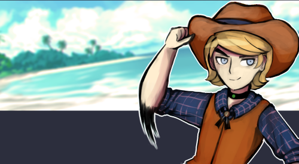 Jabberwock-Isle Trading Post
PHP / HTML / JS / CSS / SQL
Inventory management system for Jabberwock-Isle on DeviantArt, based on the murder mystery video game Super DanganRonpa 2: Goodbye Despair.
-
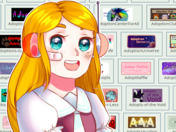 Adoptapedia
PHP / HTML / JS / CSS / SQL
Adoptapedia - short for Adoptable Encyclopedia - is an online database to help artists who create and sell character designs.
I started this project in 2012 beginning with an excel spreadsheet and eventually migrated it into first a Java application, then a C++ application, and finally a Python application as I was learning to code. The project is now being maintained as a website. The ultimate goal of the project is to provide a central hub for members of the adoptable community by providing resources as well as ways to connect with other artists.
Read more...
-
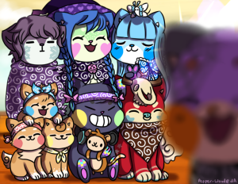 Sushi Dogs
HTML / JS / CSS
Sushi Dogs, also called Sooshes, are tiny, fictional canine creatures that resemble foods and drinks from around the globe, named as such because they are roughly the size of a single piece of sushi. When I became a moderator for the community in April 2017, I developed several tools to assist my fellow mods and Sushi Dog owners.
-
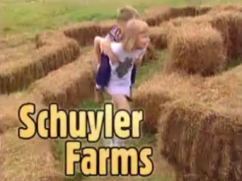
HTML / CSS
Summer 2016, I discovered the website of Schuyler Farms and wanted to test my own abilities to redesign it while still maintaining the feel of the original site.
I have since updated my work-in-progress to reflect my current skills. I plan to eventually offer the finished project to the fine folks who run the farm.
Read more...
-
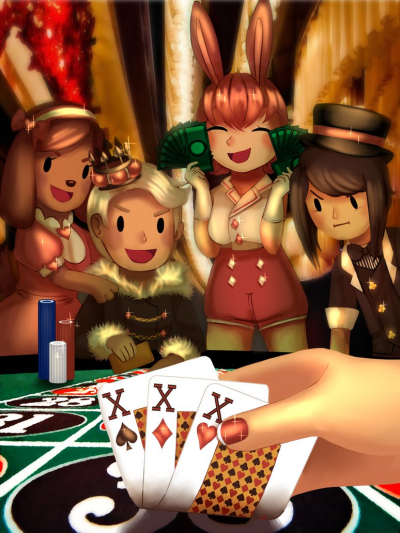 Genericon
PaintToolSAI / Photoshop / Wordpress
An assortment of art assets created for Genericon, a weekend-long, anime, sci-fi, and gaming convention run by the students of Rensselaer Polytechnic Institute in Troy, NY. In the Summer of 2016, I also assisted in decorating a formal, wordpress website for Genericon.
We had originally hosted a website on google sites, due to its ease of updating and not requiring in-depth knowledge especially for a staff that rotates out yearly. The website was moved to a wordpress server, where I helped to customize it aesthetically and populate the pages with information.
Read more...
-
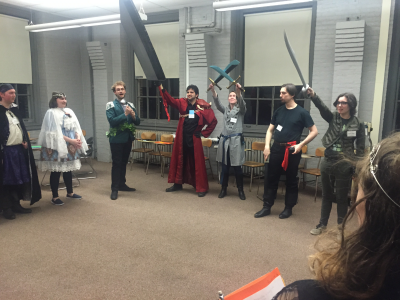 LARPing Resume
HTML / JS / CSS
Since 2013, I've participated in an assortment of theatrical-style LARPs. Rather than storing a hefty amount of documents to reminisce about the games I've played, I made a resume to showcase my adventures.
For fun, I also initially styled the webpage to have the same visual aesthetic as Windows 95 and just recently re-updated it actually looks and behaves similar to a Win95 desktop.
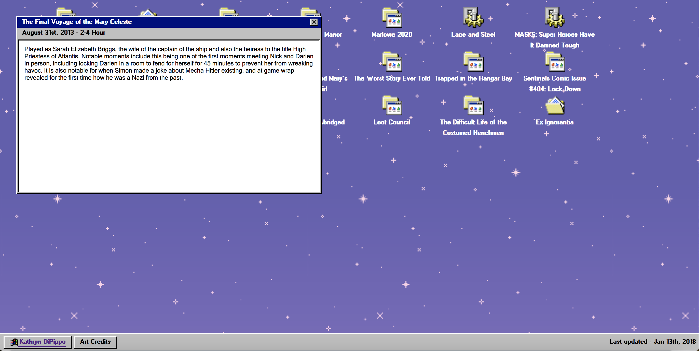New layout totally from scratch
 Initial version using Bootstrap
Initial version using Bootstrap
Read more...
-
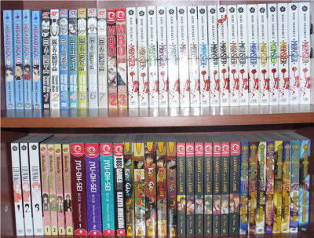 RSFA Library
HTML / JS / CSS
March 2017, I made a single-page site to help make the library catalog of the Rensselaer Science-Fiction & Anime Association easier to search.
-
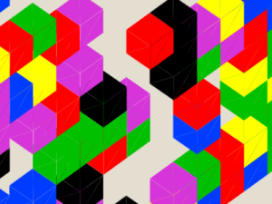 John C's Game of Life
HTML / JS / CSS
-
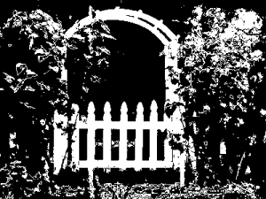 Through the Garden Gate
HTML / JS / CSS
Spring 2016, I designed and implemented a choose-your-own adventure style project using html based on a short story by Neil Gaiman called "Instructions".
The art itself is based on the works of Uno Moralez, and the text and UI design is based on the UI of the game Undertale by Toby Fox.
This was my first major undertaking with designing an interactive website and my second attempt at web development after John C's 3D Game of Life. As a result, originally all the text was stored as individual pngs I made in photoshop (not knowing how to use custom fonts on websites), and each part of the story was its own HTML page, creating a grand total of roughly 40 pages. I have since remade the page such that everything is rendered on one page without the need for dozens of pngs of text.
Read more...
-
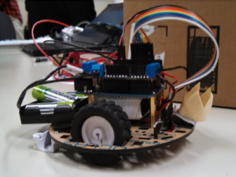 Tiberius the Line Following Robot
C / Arduino
Spring 2015, I assisted with programming a line following robot dubbed "Tiberius" using a Pololu sensor and an Arduino microcontroller. He placed first in a competition against other line followers, completing the expert course in 19 seconds.
He wears a tiny crown because he's a king.
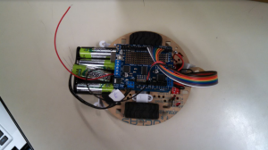Additional top-down view of Tiberius.
Video of Tiberius racing on the expert course in front of the next period class.
Read more...
-
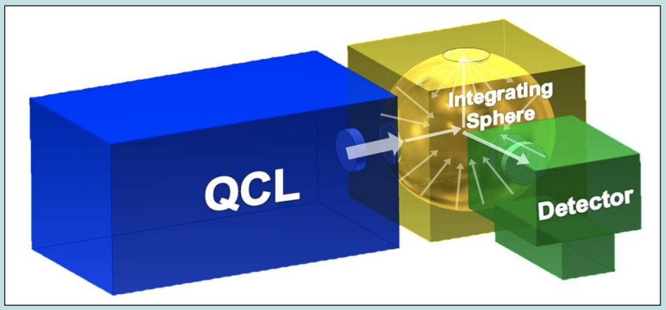 2015 MIRTHE GUI
Python
Summer 2015, I redesigned and presented a Python GUI to be used at clinical trials in diabetic facilities for MIRTHE.
The project was headed by a new graduate student - Alexandra Werth - who had requested for the majority of the matlab code written prior to be refactored and updated into python with the matlib library. I also presented an abstract and poster entitled "Python and GUI Implementation for Internal Optimization and Increased Usability of in vivo Glucose Sensing System". The interface was designed to work on a Microsoft Surface and to be favorably designed for a touch screen.
 Python GUI version with Signal
Processing inputs.
Python GUI version with Signal
Processing inputs.
 Python GUI with minimal inputs
for diabetic clinic patients to use.
Python GUI with minimal inputs
for diabetic clinic patients to use.
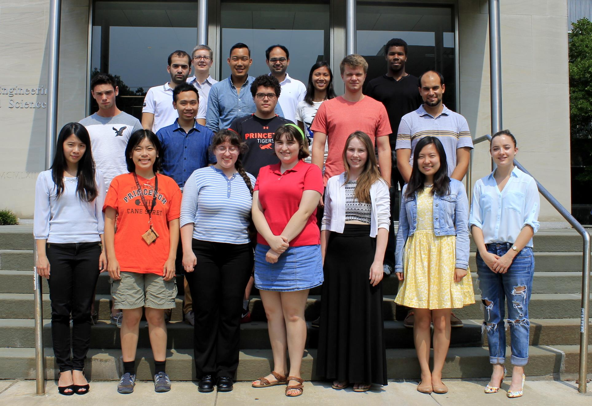Group photo of the 2015 MIRTHE REU summer research team. I am in the bright red shirt up front.
Read more...
-
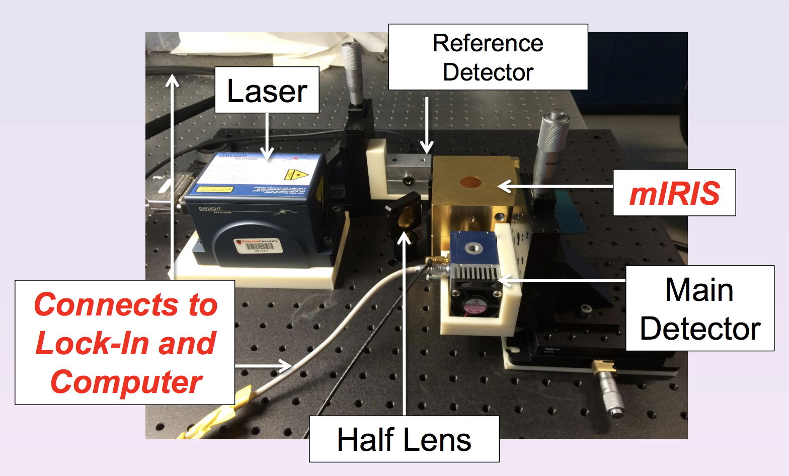 2014 MIRTHE GUI
MatLab
Summer 2014, I designed and implemented a Graphical User Interface (GUI) and calculated statistical analyses using MatLab for MIRTHE.
Under the direction of Sabbir Liakat, a graduate student at Princeton University, I designed the MatLab UI to interact with his code to read data results from the scattering signals of a laser. I also presented an abstract and poster entitled "Internal Mobilization of in vivo Glucose Sensing System" at MIRTHE Summer Workshop Conference.
 MatLab GUI with
research-specific inputs.
MatLab GUI with
research-specific inputs.
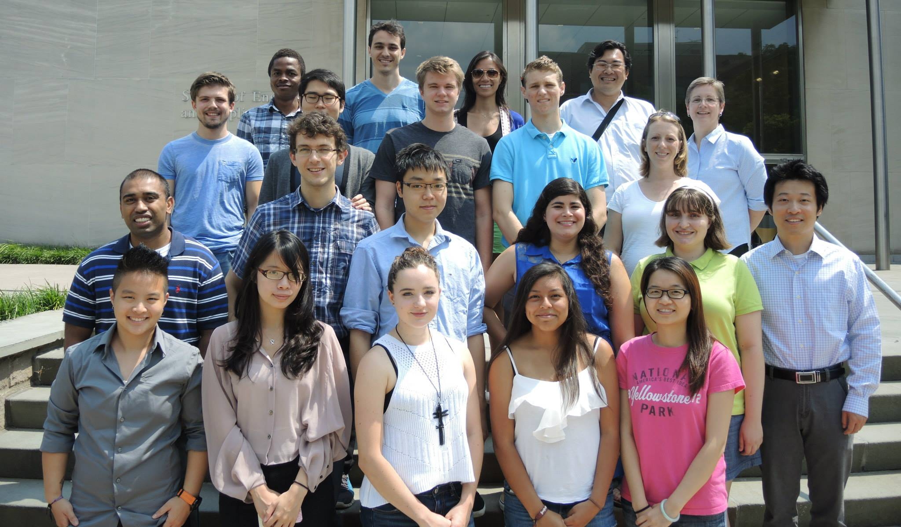Group photo of the 2014 MIRTHE REU summer research team. I am in the green shirt.
Read more...
-
 Tallan GUI
Tallan GUI
C# / CSHTML / ASP.NET
Summer 2016, one of my projects within Tallan was to assist in implementing a layout customizations feature for their Virtual Tour Project.
-
 Freeze Alert
Freeze Alert
Python
Spring 2015, a team and I developed a solution to pipes freezing and bursting in houses, especially during the winter.
Our physical units consisted of two raspberry pis - one to act as the central control and the other to be mounted on a pipe in a household with a temperature censor. I implemented the communication between these two units, a tracking graph of the temperature of the pipe over time, and a trigger to enable or disable a motor that would run water through an alternate set of pipes to prevent the water from being standstill. The above image is a complete look at our final project incarnation, featuring two systems encased in plastic with arduinos, an LED display, a temperature censor, and a simple rotary motor.
Read more...